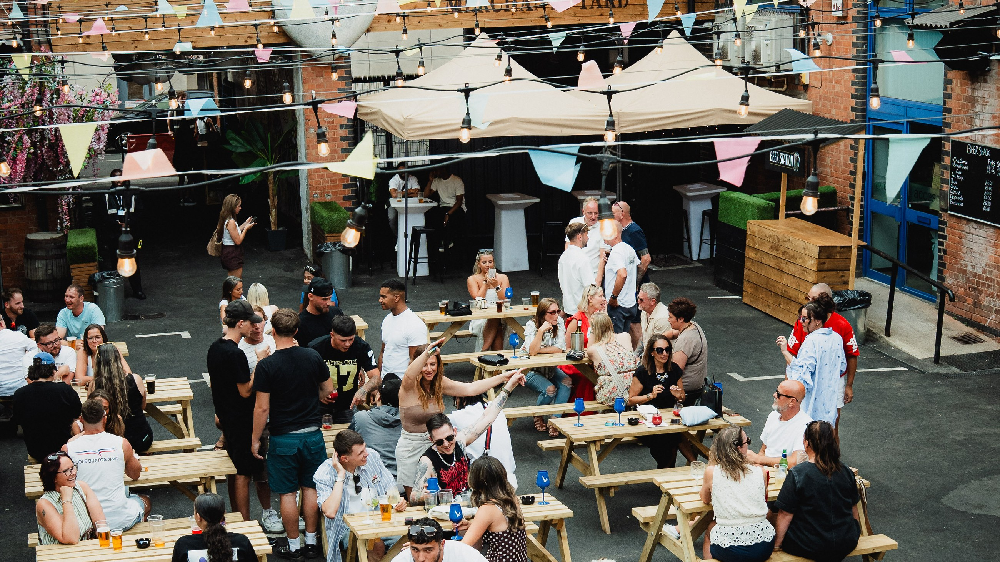

Places
Events and activation for developers, shopping centres and councils.
I work with developers, shopping centres, councils and cultural organisations on events, programming and activation, including licensing, safety and staffing on the day.

What I do for places
- Activation programmes
- Seasonal calendars of events, markets, live music and screenings that run across the year.
- Launches and openings
- Programming and campaigns that open a new scheme, square or building.
- Meanwhile and found spaces
- Turning empty units, courtyards and unusual spaces into active spaces while long-term plans take shape.
- Cultural strategy
- A programme that reflects the people who live and work in the area.
- Delivery on the day
- Licensing, safety on busy days, staffing and noise management.
In practice
- Merchants Yard: an empty courtyard turned into a 600-capacity venue that welcomed 10,000+ guests in its first summer
- Forbidden Forest: a 5,000-capacity festival stage, sold out all four editions
- Leicester's largest indoor show, 3,000 capacity, sold out
- Aisle by Aisle: DJ and live sets in South Asian supermarkets
“His knowledge extends further than promotion. We often refer to him for public safety concerns on sell-out events, management of public nuisance complaints, artist bookings and wider Leicester night-time economy insights.”
Who this is for
Property developers and asset owners · Shopping centres and retail destinations · Councils and BIDs · Universities · Cultural organisations and festivals